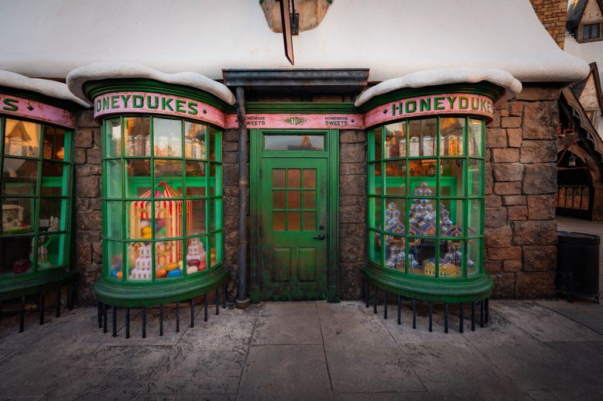
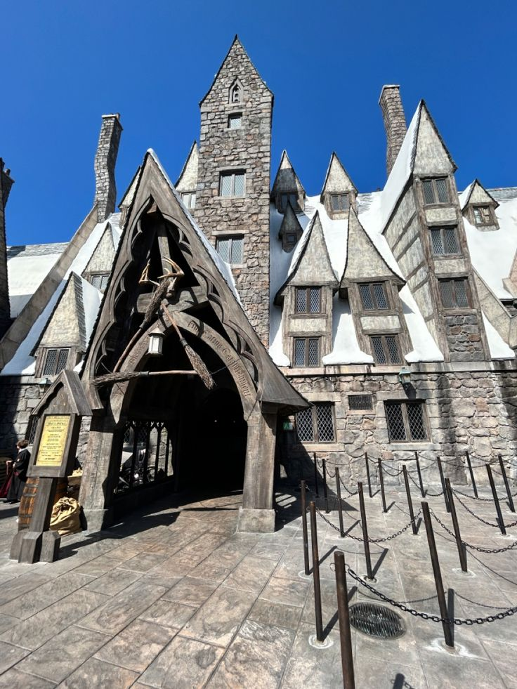
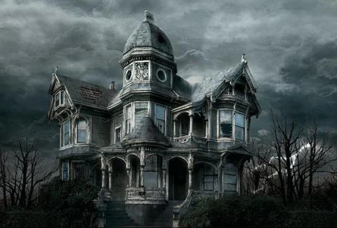

Todo lo que podés visitar, comprar y probar en Hogsmeade
Hogsmeade es un pueblo pequeño, de calles empedradas y techos siempre cubiertos de nieve, pero concentra algunos de los comercios y edificios más conocidos del mundo mágico británico. En esta guía encontrarás sus tiendas, sus casas de comidas y sus sitios más emblemáticos, junto con horarios e información útil para organizar tu visita.
Tiendas
La calle principal del pueblo concentra la mayor parte de los comercios. Todos aceptan galeones, sickles y knuts, y ninguno admite dinero muggle.
Honeydukes
La confitería más famosa del mundo mágico y la parada obligada de cualquier visitante. Vende desde ranas de chocolate con su cromo de mago célebre hasta grageas de todos los sabores, plumas de azúcar y caramelos que hacen echar humo por las orejas.

Honeydukes, en plena calle principal de Hogsmeade.
Zonko
Tienda de artículos de broma. Bombas fétidas, discos de hipo, jabón para hacer crecer verrugas y tazas mordedoras. Muy popular entre los estudiantes, bastante menos entre los profesores.
Zonko, el paraíso de las travesuras.
Dervish y Banges
Especializada en instrumentos mágicos: chivatoscopios, giratiempos, recordadoras y reparación de varitas. El lugar indicado si algo de tu equipaje mágico dejó de funcionar durante el viaje.
Venta y reparación de instrumentos mágicos.
Scrivenshaft
Papelería mágica dedicada a plumas, tinteros y pergaminos. Ofrece desde plumas de faisán hasta plumas autocorrectoras, ideales para quienes vienen a estudiar a la zona.
Plumas y pergaminos para todos los gustos.
Dónde comer y beber
El clima de las Tierras Altas de Escocia invita a entrar en calor. Estas son las tres opciones clásicas del pueblo, cada una con un público muy distinto.
Las Tres Escobas
El pub más concurrido de Hogsmeade y el corazón social del pueblo. Es célebre por su cerveza de mantequilla, servida caliente y espumosa. También ofrece hidromiel especiada y comidas caseras.

Las Tres Escobas, el punto de encuentro del pueblo.
Cabeza de Puerco
Una taberna pequeña, oscura y bastante polvorienta, en una calle lateral. Su clientela es discreta y el ambiente, poco turístico. Recomendada solo para viajeros curiosos que busquen el lado menos amable de Hogsmeade.
La taberna más antigua y menos concurrida del pueblo.
Sitios emblemáticos
Más allá de los comercios, el pueblo conserva edificios y espacios que forman parte de su identidad histórica.
La Casa de los Gritos
Una vivienda abandonada en las afueras, rodeada por una cerca alta. Está considerada el edificio más embrujado de Gran Bretaña por los alaridos que los vecinos escuchaban desde sus ventanas. No se permite el ingreso al interior.

Se puede observar únicamente desde el exterior.
Lechuceria
Alberga cientos de lechuzas clasificadas por colores según la velocidad del envío, desde las entregas locales hasta el correo internacional exprés. Es posible contratar envíos en el momento.
Envíos a todo el mundo mágico.
Horarios y precios orientativos
Información de atención al público durante la temporada alta
Lugar
Categoría
Horario
Entrada
Honeydukes
Tienda
9 a 19 h
Libre
Zonko
Tienda
10 a 18 h
Libre
Las Tres Escobas
Pub
11 a 23 h
Libre (Mayores de 16 años)
Cabeza de Puerco
Taberna
12 a 24 h
Libre (Mayores de 16 años)
La Casa de los Gritos
Sitio histórico
Solo exterior
2 sickles
Lechuceria
Servicio
8 a 17 h
Libre
Preguntas frecuentes
¿Cuánto tiempo necesito para recorrer el pueblo?
Una jornada completa alcanza para conocer las tiendas principales, almorzar en el pub y caminar hasta la Casa de los Gritos.
¿Se puede llegar sin usar magia?
Sí. La estación de tren es la vía de acceso habitual y no requiere aparición ni polvos flu.